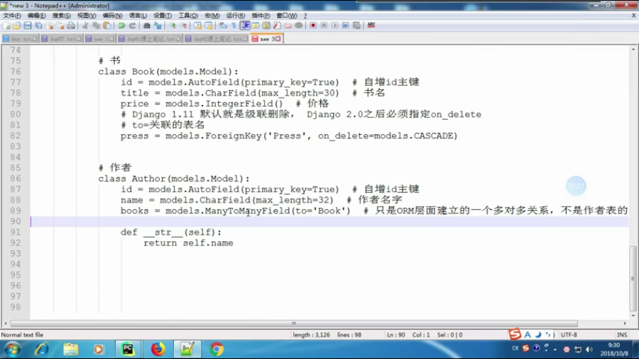
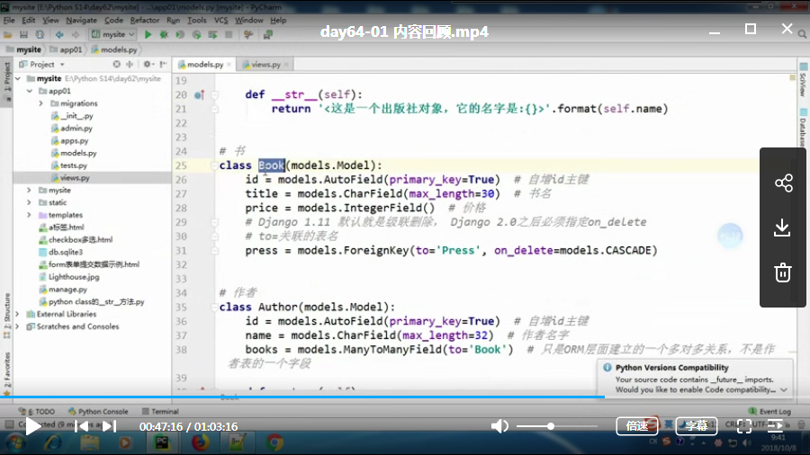
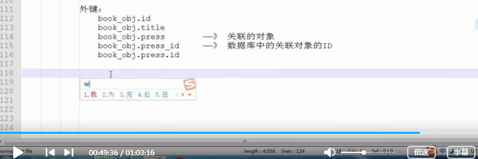

day64-01-内容回顾
model中设计多对多

在多对多的关系中如何设计model
model的表结构设计，见上图
业务中频繁用到的是什么
1：通过作者来查找书籍，那么在作者表中设计外键
2：通过书籍来查找作者，那么在书籍表中设计外键
orm操作回顾
1：model.objects.all() 查询所有对象，返回queryset
2：model.objects.filter() 查询所有满足条件的数据，返回queryset
3：model.objects.get() 查询有且只有一个对象，没有或者有多个就会报错
属性–补充foreignkey操作

在有外键的的model中正向跨表的两种写法
注意区别

在含有外键的表中添加数据
day64-02-decorator
什么是decorator
1：不改变源代码的情况下给函数添加新功能
2：不改变函数的调用方式
闭包
1：在一个外函数中定义了一个内函数
2：内函数运用了外函数的临时变量
3：外函数的返回值是内函数的引用
decorator实例代码
def test():
print('test')
def fun(fn):
def inner():
print('开始前')
fn()
print('开始后')
return inner
test = fun(test)
text()
def fun(fn):
def inner():
print('开始前')
fn()
print('开始后')
return inner
@fun --- test = fun(test)
def test():
print('test')
text()